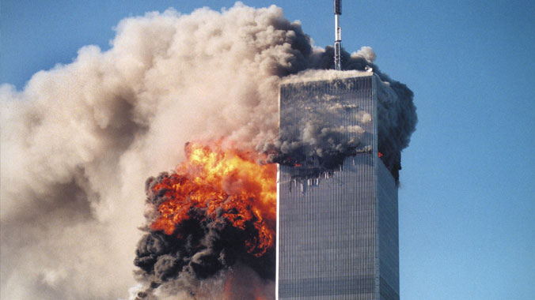
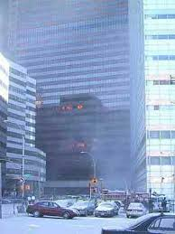
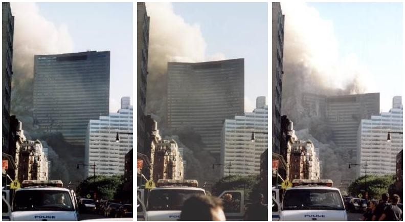
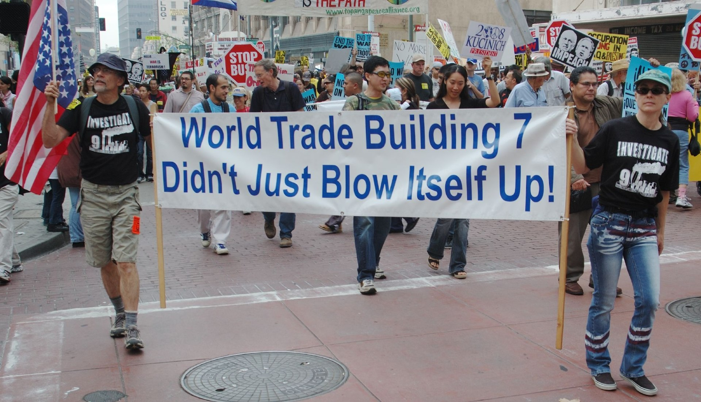
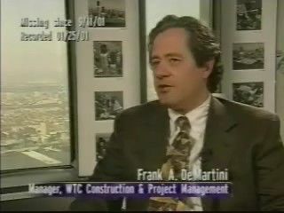
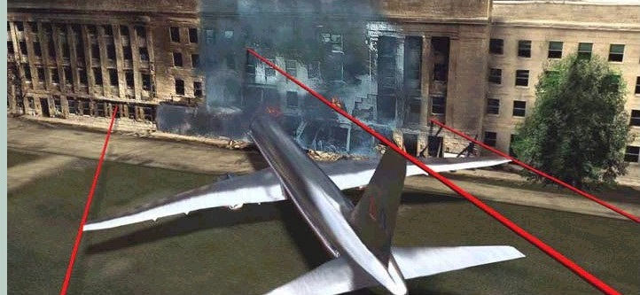
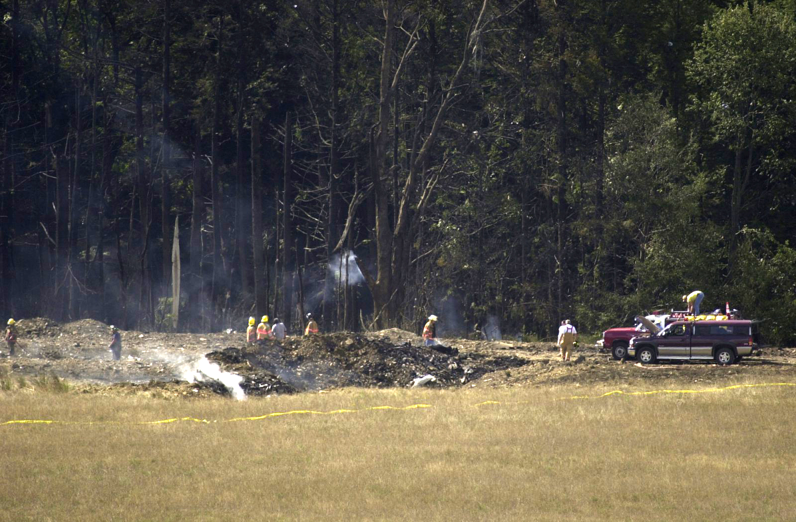
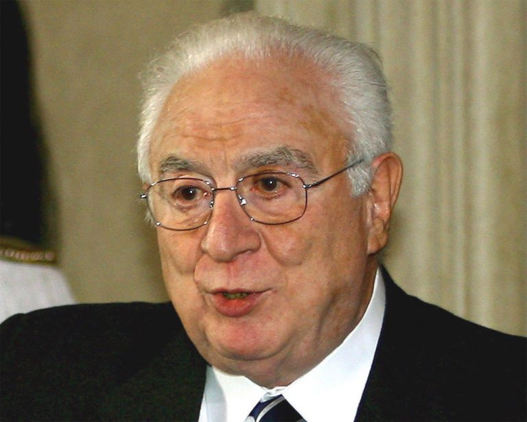
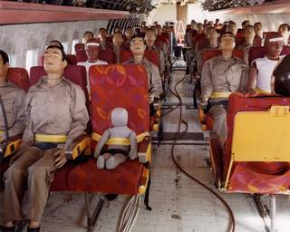

- 11 Eylül 2015 -
11 Eylül 2001’de olan hadiseleri bütün dünya televizyondan ve gazetelerden duydu. Verilen habere göre, 19 tane Müslüman Arap terörist, 4 adet yolcu uçağını yolcuları ile birlikte kaçırmışlar,
İki kule çarpılmakla kalmamış, kısa bir müddet sonra tepeden başlayarak tabana kadar 10 saniye içinde toz bulutuna dönüşmüştü.

resim: Dünya Ticaret merkezi 7 nolu bina yıkılmadan önce görünüyor. Sadece birkaç penceresinde alev var.
Üçüncü kuleyi duymadınız mı?
2 uçak 110 katlı iki kuleye çarpıyor. Bir de bahsedilmeyen 47 katlı 7 nolu kule var. Bu kule de, akşam 5:20’de, kendisine uçak çarpmadığı halde yıkılıyor. Bu kulenini yıkılmadan önce fotoğrafı aşağıda görünüyor. Sadece bir iki katının birkaç odasında yangın olduğu görünüyor. Aşağıdaki resimde 7 nolu kulenin yıkılış anı görünüyor.

resim: DTM 7 nolu bina 10 saniye içinde çöküyor.

resim: Pankart tercüme: "Dünya Ticaret Merkezi 7 nolu bina kendi kendisini havaya uçurmadı"
2 kulenin yıkılması
11 Eylül günü sabahı bu iki kuleye iki uçak çarpıyor, kısa bir müddet sonra da bu iki kule yıkılıyor. Birinci gün, naklen yayında Fox televizyonunun muhabiri, uçağın yan pencerelerinin olmadığını iki defa söylüyor. Gördüğü hiçbir havayolu şirketinin ticarî uçağına benzemediğini belirtiyor. Karşısındaki sunucu da, o zaman kargo uçağı olabileceklerini söylüyor. Uçaklar çarpmadan çok az evvel, füze fırlatma ateşi olabilecek bir ateş çıkarıyorlar. 4 ayrı açıdan çekilmiş, 4 ayrı videoda ikinci kule için bu durum görülüyor. Birinci kulenin elde bulunan tek videosunda da, yine bu durum gözlemlenebiliyor. Bilim adamları yangından dolayı, çelikten yapılmış olan bir binanın çökmeyeceğini söylüyorlar. Bunu bilmek için bilim adamı olmaya da gerek yok. Uçak yakıtının sıcaklığı, çeliği eritmeye yetmiyor.
Yangın olan katlarda yaşayan insanların fotoğrafları
110 katlı bina, yaklaşık 8 saniyede yerle bir oluyor. 110 katlı bir binanın tepesinden aşağıya bir taş atılsa, bu taş da yaklaşık 8 saniyede yere düşeceği söyleniyor. Fizikteki serbest düşme hızındaki bir yıkımın, ancak patlayıcılar ile kontrollü ve planlı yıkım ile mümkün olabileceği ifade ediliyor. Görgü şahidi itfaiyeciler, binalardan bomba patlama sesleri geldiğini söylüyorlar. Binalar yıkılırken çok şiddetli patlamalar oluyor. Bu patlama seslerini siz de videolarda rahatlıkla duyabilirsiniz.
Frank DeMartini: Bu binalar birden fazla uçak çarpmasına dayanır

resim: Frank DeMartini, DTM inşaat müdürü
11 Eylül 2001’den 8 ay kadar evvel, Dünya Ticaret Merkezinin inşaat müdürü, Frank DeMartini bir video mülâkatı vermiş. Videosunda şunları söylüyor: “İkiz kuleler bir Boeing 707 yolcu uçağı çarpacak ve bir şey olmayacak şekilde tasarlanmış. Boeing 707 o zamanın en büyük yolcu uçağı. İnanıyorum ki, bu binalar değil bir uçak, birden fazla yolcu uçağının çarpmasına da dayanabilir.” Frank DeMartini’nin bürosu 88’inci kattaymış. 11 Eylül’den sonra gören olmamış. Demek ki, o da binalardaki diğer 3 bin civarında kişi ile beraber toza dönüşmüş.
Pentagona çarptığı söylenen uçak nerede?

resim: 5 metre çapındaki delikten koca uçak nasıl girip kayboldu?
Bir Boeing 757 boş iken 60 ton gelirmiş. 60 tonluk enkaz nereye gitti diye soruluyor. Ortada enkaz yok! Uçağın kanatları, kuyruğu, motorları, gövdesi, yolcuların cesetleri ortada yok. Topu topu 5 metre çapında bir delik var. Güvenlik kameralarının çektiği videolar ise basına verilmiyor. FBI etraftaki bir benzinliğin o tarafa dönük kamerasına da el koymuş. Eğer bir yolcu uçağı çarpsaydı, aşağıdaki resimde gösterildiği gibi bir tahribat olacaktı. Böyle bir tahribatın olmadığı resimlerde görülüyor.
Shanksville’de düştüğü söylenen uçak da ortada yok

resim: Uçak düştü denilen 3 metre eninde, 5 metre boyunda çukur. Ortada bir uçak yok!
Shanksville belediye başkanı, Mart 2003 de Alman televizyonuna verdiği beyanatta ‘Düşen bir yolcu uçağı yok!’ diyor. Fotoğraflarda sadece 3 metre eninde, 6 metre boyunda bir çukur var, o kadar. Yukarıdaki resimde görünüyor.
Eski İtalyan devlet başkanı Francesco Cossiga:

resim: Eski İtalyan devlet başkanı Francesco Cossiga
“11 Eylül’ü Mossad ve CIA yaptı” İtalyan eski başkanı Cossiga, 30 Ekim 2007 tarihinde, İtalya’nın en eski ve en çok okunan gazetelerinden “Corriere della Sera” gazetesine verdiği beyanatta şöyle söylüyor: “Dünyanın her gizli servisi iyi bilir ki, 11 Eylül işi CIA ve Mossad’ın işidir, siyonistlerin yardımıyla yapmışlardır. Maksatları Arapları dünyanın gözünde küçük düşürmek ve Irak ile Afganistan işgalini mümkün kılmaktır.”
Uzaktan kumandalı, insansız uçak teknolojisi eskiden beri var:

Uzaktan kumandalı teknoloji ile çarpma testi yapılan uçağın içi.
1 Aralık 1984’de, bir Boeing 720 yolcu uçağı uzaktan kumanda ile kaldırılıp, belirlenen yere uçurularak, çarpma testi yaptırılıyor. Yani, yolcu uçaklarını insansız uçurabilecek teknoloji en azından 1984’den beri var.
11 Eylül Gerçeği toplulukları
Bu yazıda bahsedilen konularla ilgili Google’de, “911 truth” yazarak kendi araştırmanıza da başlayabilirsiniz. Çok sayıda web sayfası, video ve grup var. 11 Eylül’ün televizyonlarda, gazetelerde söylendiği gibi olmadığını iddia eden, açıklayan çok grup mevcut. İngilizce olarak, youtube’de olan şu videolara bir başlangıç olabilir: “911 in plane site - dave vonkleist”, “loose change - dylan avery” Ayrıca, “Architect and Engineers for 911 Truth” diye ararsanız, bu topluluğun internet sayfasından da videolara, dokümanlara ulaşabilirsiniz. Burada ve bunun gibi başka sitelerde, mimarlar, inşaat mühendisleri, profesörler iki kulenin böyle bir yangında çökemeyeceğini içerisine daha önceden yerleştirilmiş patlayıcılar ile yıkıldığını ve bunun delillerini açıklıyorlar. Aşağıdaki pankartta şöyle yazıyor: “Dünya Ticaret 7 numaralı binası kendi kendisini havaya uçurmadı!”
Northwood planı nedir?
Northwood Operasyon planı, 1962 yılında, Amerikan “genelkurmay başkanı” (joint chiefs of staff bu demek sanırım) olan Lyman Lemnitzer tarafından yapılmış bir plandı. Bu plana göre, CIA Amerikan sivil halkına ve Amerikan askerî hedeflerine karşı terörist saldırılar yapacak, suç Küba’nın üzerine atılacak ve bu şekilde Küba’ya savaş açabilmek için gerekli bahane bulunacaktı. Bu plan başkan Kennedy’ye teklif ediliyor, Kennedy reddediyor.
HARUN ALTAY
h.altay [@] gmail.com